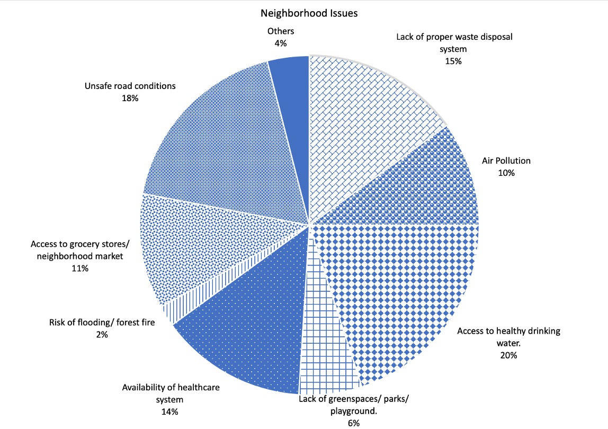
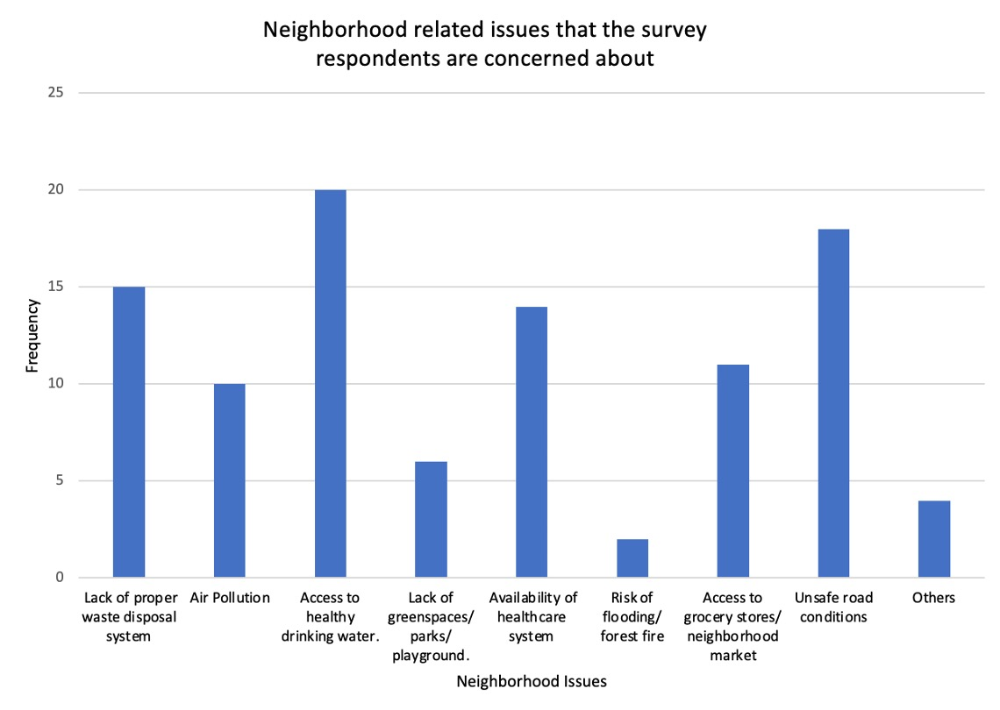
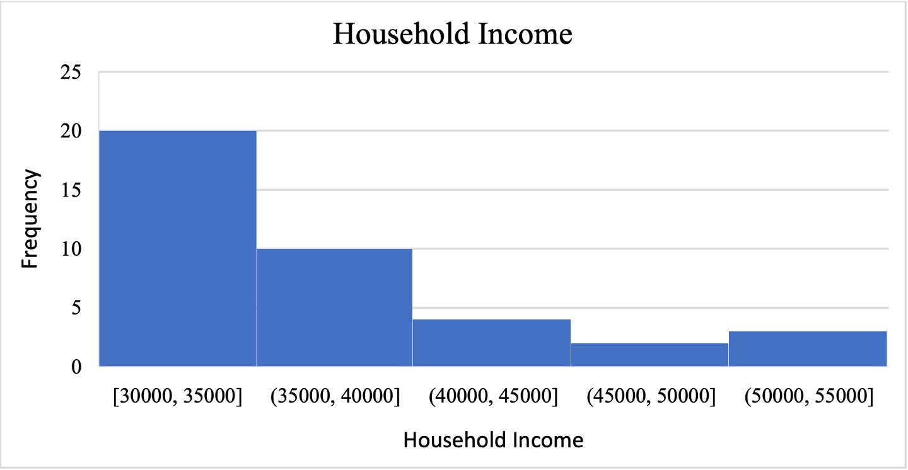
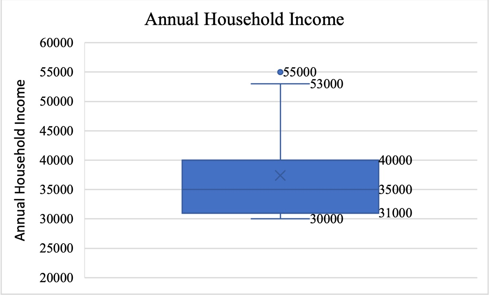
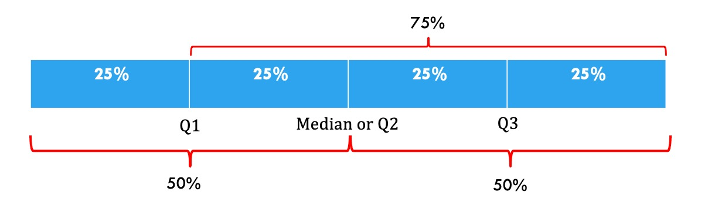
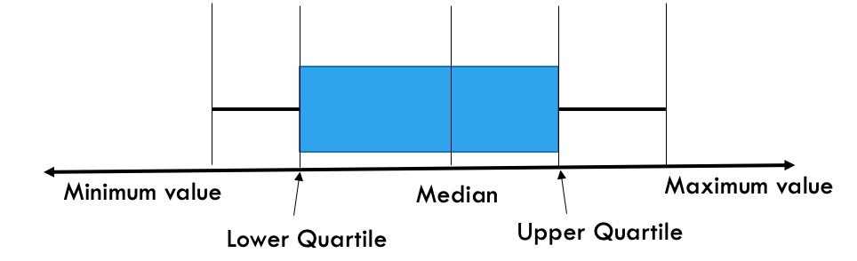
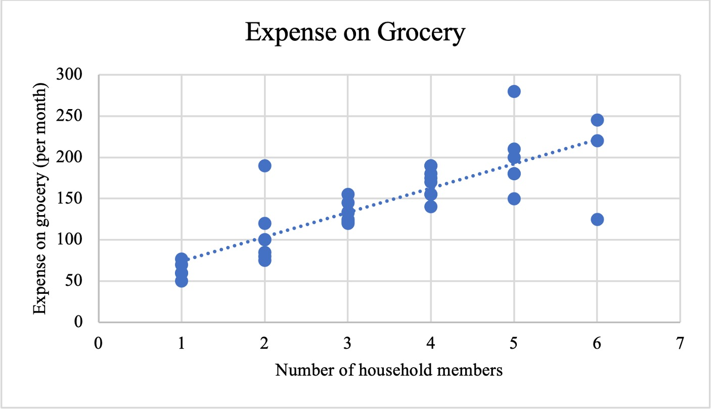
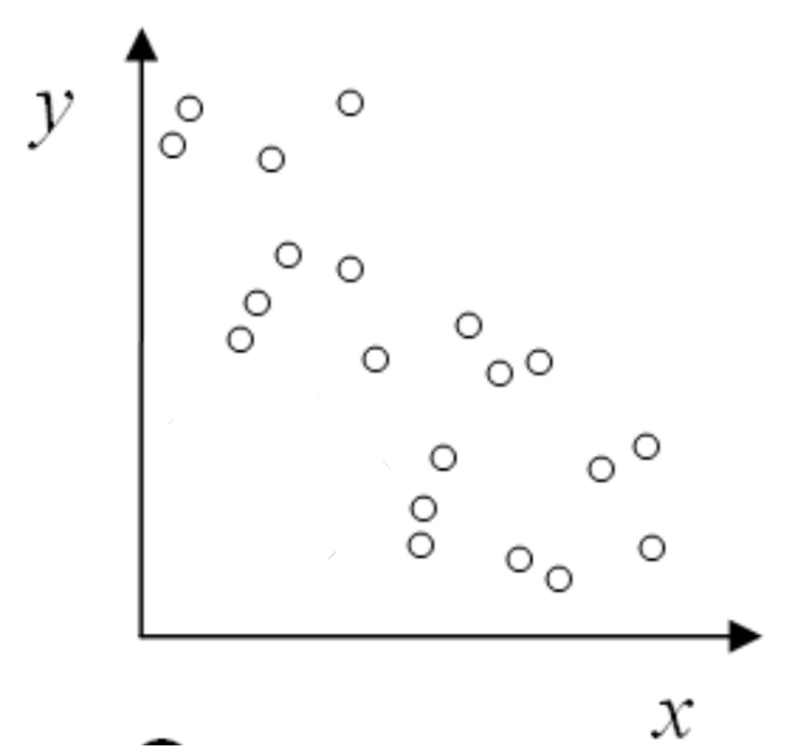
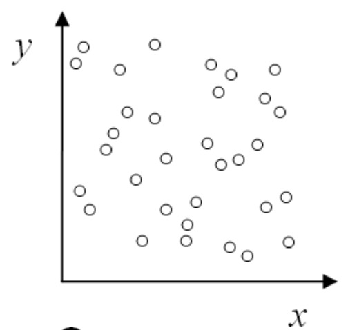

Section 2.6 Choosing Data Visualizations
Data visualization is a way to graphically represent data and information by using visual elements such as charts, graphs, and maps. The purposes of data visualizations are to summarize, compare, reveal patterns, and notice anomalies present in the data; in other words, data visualization makes data more understandable to an individual.
Subsection 2.6.1 Why is data visualization important?
In the world of big data, where we have access to a large amount of information, it is an essential skill for an individual to learn to handle a significant volume of data and devise a quick and effective way to present the data in meaningful ways to others. Data visualization is a tool that serves such purposes. It provides an intuitive way to visualize and understand trends, outliers, clusters, and patterns in given data sets. Data visualization also helps us compare different data sets and prompts us to raise questions that stimulate research and suggest ideas. It offers a meaningful way to tell a story from data but with a purpose.
Subsection 2.6.2 Types of Data Visualizations
Once you identify your data type, you can choose your data visualizations accordingly. For guidance, see Table 2.6.1:
| Number of Variables | Data Types | Visualizations | |
| 1 | Categorical Data | Nominal Data | Pie Chart |
| Bar Graph | |||
| Ordinal Data | Pie Chart | ||
| Bar Graph | |||
| Quantitative Data | Interval Data | Histogram | |
| Bar Graph | |||
| Ratio Data | Histogram | ||
| Bar Graph | |||
| 2 | Quantitative Data | Interval Data | Scattered Plot |
| Ratio Data | Scattered Plot | ||
A brief account of each of the data visualization is given below:
Subsubsection 2.6.2.1 Pie charts
A pie chart is a visual tool that graphs categorical data and helps one understand the part-to-a-whole relationship. Visually a pie chart is circular in shape that is divided into sectors, where each sector represents the number or percentage of times an observation or category has been selected. The pie chart given in Figure~\ref{fig:Pie}, represents the the number or percentage of times respondents expressed concerns about their neighborhood issues. Each sector of the pie chart represents a distinct category, that is a particular neighborhood issue.
The pie chart given in Figure 2.6.2 shows that
-
15% times respondents expressed their concerns about improper waste disposal system,
-
10% times respondents expressed their concerns about air pollution,
-
20% times respondents expressed their concerns about access to healthy drinking water,
-
6% times respondents expressed their concerns about lack of greenspaces/ parks/ playgrounds,
-
14% times respondents expressed their concerns about availability of healthcare system,
-
2% times respondents expressed their concerns about risk of flooding/ forest fire,
-
11% times respondents expressed their concerns about access to grocery stores/ neighborhood market,
-
18% times they expressed their concerns about unsafe road conditions, and
-
4% times they expressed their concerns about other neighborhood issues not included in the list.
The important thing to know about a pie chart is that the bigger the area of the sectors, the greater the values they represent. That means, in the given pie chart, since the area of the sector representing “Access to healthy drinking water” is the highest (20% of the total area), you can conclude that out of the nine given issues, the respondents chose "Access to healthy drinking water” the maximum number of times. To be precise, 20% of the times respondents said that they were concerned about healthy drinking water. Likewise, the area of the sector representing “Risk of flooding/ forest fire” is the smallest (2% of the total area), the pie chart suggests that only 2% of times respondents said that they were concerned about flooding and forest fire.

A pie chart is usually drawn to graph categorical data. To create a pie chart,
-
First, create a frequency distribution table, where you will note how many times a particular category has been repeated. For example, question 2 of the "Neighborhood welfare survey" asked the respondents to indicate all the neighbourhood-related issues they were concerned about. The question provided the respondents with nine options. Each option would be considered as a category. Based on the responses, if you find that 200 responses have been collected, and 30 of them indicate lack of a proper waste disposal system, then the corresponding frequency would be 30. Likewise, if 20 out of 200 responses indicate respondents’ concern about air pollution, then the corresponding frequency would be 20.
Table 2.6.3. Neighborhood-Related Issues Frequency Lack of proper waste disposal system 30 Air Pollution 20 Access to Healthy Drinking Water 40 Lack of greenspaces/parks/playgrounds 12 Availability of healthcare system 28 Risk of flooding/ forest fire 4 Access to grocery stores/ neighborhood market 22 Unsafe road conditions 36 Others 8 -
Next, calculate the relative frequency of each category and their corresponding percentage. To calculate the relative frequency of each category, divide the frequency of each category by the total number of responses. For example, the relative frequency of lack of a proper waste disposal system = \(\frac{30}{200} = \frac{3}{20}\) Likewise, the relative frequency of air pollution = \(\frac{20}{200}= \frac{1}{10}\text{.}\)To calculate the corresponding percentages, multiply the relative frequencies by 100. For example, the percentage corresponding to lack of a proper waste disposal system = \(\frac{3}{20}\times100 = 15\%\text{.}\)That means, 15% of the times respondents expressed their concerns about lack of a proper waste disposal system in their neighborhood.
Table 2.6.4. Neighborhood-Related Issues Frequency Relative Frequency Percentage Lack of proper waste disposal system 30 3/20 15% Air Pollution 20 1/10 10% Access to Healthy Drinking Water 40 1/5 20% Lack of greenspaces/parks/playgrounds 12 3/50 6% Availability of healthcare system 28 7/50 14% Risk of flooding/ forest fire 4 1/50 2% Access to grocery stores/ neighborhood market 22 10/91 11% Unsafe road conditions 36 9/50 18% Others 8 1/25 4% -
Finally, once the percentages are calculated, create the pie chart. Divide the circle into sectors, where each sector represents a category. The relative area of each sector must match the percentage of time a particular category has been selected. For example, since 15% of the times respondents expressed their concerns about the lack of a proper waste disposal system, the area of the sector representing "lack of a proper waste disposal system" is 15% of the total area of the pie chart. Refer to Figure 2.6.2.
Subsubsection 2.6.2.2 Bar graph
A bar graph is a visual tool that uses bars to compare data belonging to different categories. In the bar graph given given in Figure 2.6.5, each bar represents the number of times respondents raised concerns about different issues in their neighborhoods. As the visualization suggests, 15 respondents expressed their concerns about lack of proper waste disposal system, 10 respondents expressed their concerns about air pollution, 20 respondents expressed their concerns about access to healthy drinking water, six respondents expressed their concerns about lack of greenspaces/ pars/ playgrounds in the neighborhood, 14 respondents expressed their concerns about availability of healthcare system, 2 respondents expressed their concerns about forest fire and flooding, 11 respondents expressed their concerns about access to grocery stores and neighborhood markets, 18 respondents expressed their concerns about unsafe road conditions, and four respondents expressed their concerns about other issues in the neighborhood that are not included in the list.
The important thing to know about a bar graph is that the longer/ taller the bars are, the greater the values they represent. That means, in the given bar chart, since the height of the bar representing “Access to healthy drinking water” is the highest, you can conclude that most of the respondents, twenty to be precise, said that they were concerned about healthy drinking water. Likewise, the height of the “Risk of flooding/ forest fire” bar suggests that minimum number of respondents, two to be precise, said that they were concerned about flooding or forest fire.

A bar graph is usually drawn to graph categorical data. To create a bar graph,
-
First, create a frequency distribution table, as in Table 2.6.3, where you will note how many times a particular category has been repeated or the given values corresponding to different categories. For example, question 2 of the "Neighborhood welfare survey" asked the respondents to indicate all the neighbourhood-related issues they were concerned about. The question provided the respondents with nine options. Each option would form one category. The survey response suggests that 20 respondents expressed their concern about access to healthy drinking water. Hence the frequency corresponding to "access to healthy drinking water" is 20.
-
Next, draw the two axes. Along the horizontal axis, plot all the categories, and along the vertical axis mark the frequencies.
-
Draw the bars for each category. Note that the height of a bar corresponding to a category is same as its frequency.
Subsubsection 2.6.2.3 Histogram
Histogram is a visual tool used to explore the frequency distribution of quantitative data (both Interval and Ratio). The shape of a histogram decides if the data distribution is symmetric or skewed (right skewed and left skewed).
The histogram given in Figure 2.6.6, represents the frequency distribution of the “annual household income”. In this histogram, the data has been used to create five bins of size $5,000 along the x-axis, and the frequency of responses has been recorded along the y-axis. The important thing to know about a histogram is that the taller the bars are, the greater the frequency they represent. That means, in the given histogram, since the height of the first bin is the highest, 20 to be exact, you can conclude that 20 respondents said that their annual household income is between $30,000 and $35,000.

To explore the distribution of a quantitative data through a histogram, divide the quantitative data into ordered groups, otherwise known as bins, and count the number of data points that fall in each bin. For example, question 8 of the "Neighborhood welfare survey" asked the respondents about their annual household income. Thirty nine respondents responded to the question. The minimum recorded data is $30,000, and the maximum recorded data is $55,000. To create the histogram,
-
First, divide the range of data ($55,000-$30,000) into different bins of a fixed size (say $5,000). So, the bins would be, [30,000-35,000], (35,000-40,000],(40,000-45,000],(45,000-50,000],(50,000-55,000].
-
Next, create a frequency distribution table to count the number of responses that fall under each bin.
-
After the frequency distribution table is prepared, draw two axes. Along the horizontal axis, draw the bins and mark frequencies along the vertical axis.
-
Finally, draw bars from the lower value of one interval to the lower value of the next interval. The height of each bar should be equal to the frequency of its corresponding interval. That is, in the "Neighborhood welfare survey", if twenty respondents said that their annual household income is between $30,000 and $35,000, then the height of the bar corresponding to the bin [30,000-35,000] would be 20.
Subsubsection 2.6.2.4 Histogram vs Bar graph
Although a histogram looks like a bar graph, there exists a fundamental difference between the two.
-
A bar graph visually represents categorical data (nominal and ordinal), whereas a histogram represents quantitative data.
-
In a bar graph, different categories are represented along the horizontal axis (if the bar graph is oriented vertically), and the associated values are represented along the vertical axis. On the contrary, in a histogram, the horizontal axis represents the different bins of equal length, and the vertical axis represents the frequency of data.
-
Since each bar in a bar graph represents different categories, the orders of the bars are not important, and there exist spaces between the consecutive bars. However, in a histogram, the bins are created to organize the quantitative data, so the bins are organized in ascending order, and no gaps exist between any two bins.
Subsubsection 2.6.2.5 Box plot
A box plot, otherwise known as a box and whisker plot, is a visual tool that uses the five-number summary of a data set to look at the spread and distribution of data. The five-number summary of a data set includes its minimum value, lower quartile \((Q_1)\text{,}\) median \((Q_2)\text{,}\) upper quartile \((Q_3)\text{,}\) and maximum value.

The box and whisker plot given in Figure 2.6.7represents the annual household income of the survey respondents.
The box in the middle shows the inter-quartile range \((Q_3 – Q_1)\text{,}\) which contains the middle 50% of the data. It means, 50% of the respondents said that their annual household income is between $31,000 and $40,000.
The lower and upper whiskers represent the bottom and top 25% of the responses, respectively. That means 25% of the respondents said that their annual household income is lower than $31,000 (lower whisker), and 25% of the respondents said that their annual household income is more than $40,000 (Upper whisker).
The line in the middle of the box represents the median. It passes through point $35,000 which indicates that 50% of the respondents said that their annual household income is more than $35,000, and 50% of the respondents said that their annual household income is less than $35,000.
There exists an outlier in the data set. One respondent said that their annual household income is $55,000, significantly higher than the rest of the responses.
To draw a boxplot follow the following steps:
-
First, organize the data in an ascending order. For example, to draw the boxplot of annual household income, first organize the incomes in an ascending order, with the lowest annual household income on the left and the highest annual household income on the right.
-
Next, calculate the median annual household income. The median is the middle number in a sorted data set. It divides a data set into exactly two halves, such that 50% of the data points are lesser than the median, and 50% of the data points are larger than the median. If the median annual household income is $35,000, that means 50% respondents’ annual household income is more than $35,000, and 50% respondents’ annual household income is less than $35,000\}
-
Next, calculate the first and third quartile. Values that divide a data set into four equal parts (quarters) are called quartiles.The first quartile or the lower quartile (\(Q_1\)) is the data point below which 25% of the data points, and above which 75% of the data points are located. If the first quartile of the annual household income data is $31,000, then 25% of the respondents’ annual household income is less than and 75% of the respondents’ annual household income is more than$31,000.The third quartile or the upper quartile (\(Q_3\)) is the data point below which 75% of the data points, and above which 25% of the data points are located. If the third quartile of the annual household income data is $40,000, then 75% of the respondents’ annual household income is less than and 25% of the respondents’ annual household income is more than$40,000.
Figure 2.6.8. Figure showing how Quartiles split a data set into four equal parts. Image Description 4. The difference between the third and first quartile is known as interquartile range (\((Q_3 – Q_1)\)).An outlier is an observation (data point), which is either too high or too low compared to the rest of the data points in a data set. For example, in the annual household income data set, the annual household income of $55,000 is an outlier. That means, the respondent having an annual household income of $55,000 is earning considerably high compared to the rest of the respondents who filled the survey.The rule that is followed to identify an outlier in a given data set is called 1.5 x IQR. When a data set is given,-
First find its median, upper quartile, and the lower quartile.
-
Next, calculate the value of interquartile range \((Q_3-Q_1)\)
-
Calculate 1.5 x IQR = 1.5 x \((Q_3-Q_1)\)
-
Find the fences:\begin{equation*} \text{Upper fence: }Q_3 + 1.5 * (Q_3-Q_1) \end{equation*}\begin{equation*} \text{Lower fence: }Q_1 - 1.5 * (Q_3-Q_1) \end{equation*}
-
Any data point beyond the fences, that is either lower than the lower fence or higher than the upper fence is an outlier.
-
-
Finally, draw a number line (horizontal or vertical) and use the five number summaries, minimum value, lower quartile \((Q_1)\text{,}\) median \((Q_2)\text{,}\) upper quartile \((Q_3)\text{,}\) and maximum value, to draw the box and whisker plot.
Figure 2.6.9. Figure showing how to draw a box plot when there is no outlier. Image Description 5. If there exists one or more outlier in a data set, then the rule will be slightly different. If there is an outlier on the lower side, then to draw the lower whisker join the lower quartile and the lowest non-outlier data point. If there is an outlier on the upper side, then to draw the upper whisker join the upper quartile and the highest non-outlier value.
Subsubsection 2.6.2.6 Scatter plot
A scatter plot is a visual tool that is used to visualize the relationship between two numeric variables. In a scatter plot, the independent variable is usually plotted along the horizontal or \(x\)-axis, and the dependent variable is usually plotted along the vertical or \(y\)-axis.

The scatter plot given in Figure 2.6.10 represents the relationship between the number of household members of the survey respondents and their monthly grocery expenses. As the figure suggests, the variable number of household members is an independent variable (plotted along the \(x\)-axis), and the variable \emph{monthly grocery expense} is a dependent variable (plotted along the \(y\)-axis). The scatter plot shows if there exists a relationship between the two variables, that is if the number of household members impacts the respondents’ monthly grocery expenses.
Scatter plots are drawn to explore the correlation between two variables. One variable (independent variable) is considered an explanatory variable, and the other is considered a dependent variable. For example, in the "Neighborhood welfare survey", respondents were asked about their number of household members and their monthly grocery expenses. If someone explores the possible impact of the number of household members on monthly grocery expenses, then the number of household members would be considered an independent variable, and monthly grocery expenses would be a dependent variable (depends on the number of family members). To draw a scatter plot,
-
Identify the independent and dependent variables.
-
Plot independent variable along the horizontal axis or x-axis, and plot the dependent variable along the vertical axis or y-axis. Label the axes.
-
Plot the ordered pairs (idependent variable, dependent variable).
Three types of linear correlation can be identified through the patterns displayed by a scatterplot.
-
If the increase/ decrease in one variable indicates an increase/ decrease in the other variable, then there exists a positive correlation between the two variables.

Figure 2.6.11. Scatter plot indicating a positive correlation between two variables. Remix of [2.10.1.11] -
Negative correlation: If the increase/ decrease in one variable indicates an decrease/ increase in the other variable, then there exists a negative correlation between the two variables.
Figure 2.6.12. Scatter plot indicating a negative correlation between two variables. Remix of [2.10.1.11]. -
No correlation:
Figure 2.6.13. Scatter plot indicating no correlation correlation between two variables. Remix of [2.10.1.11]